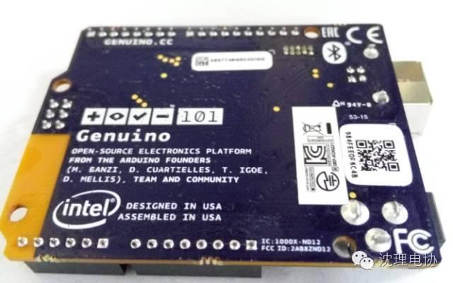
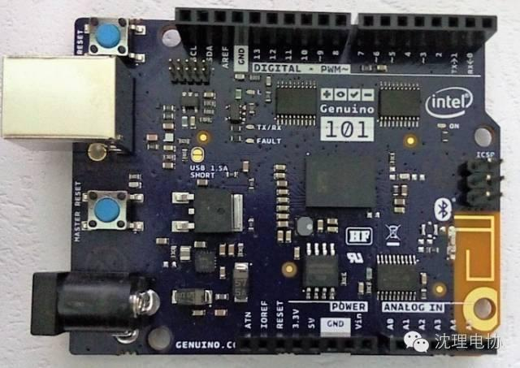
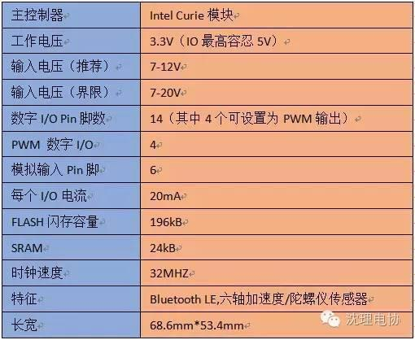
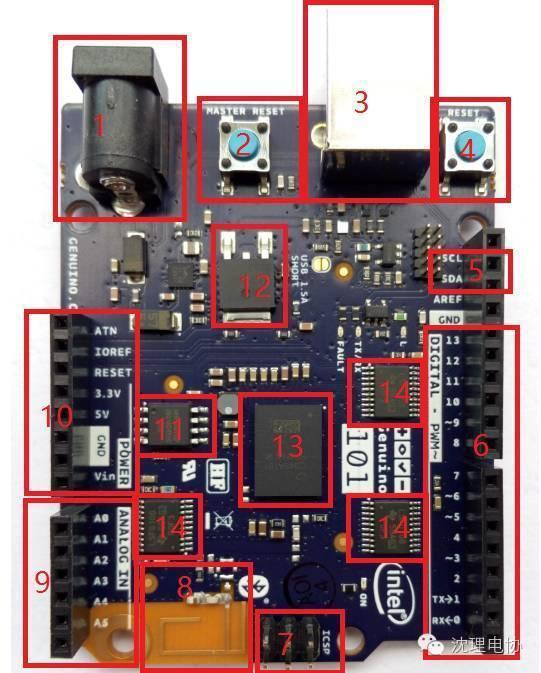
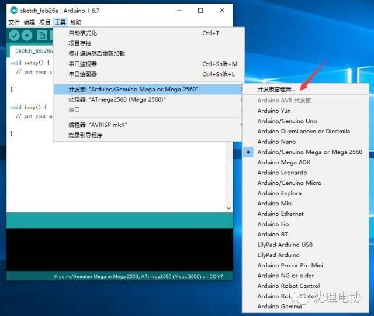
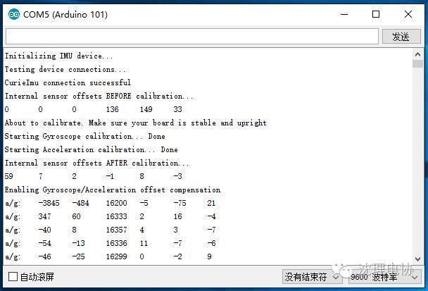
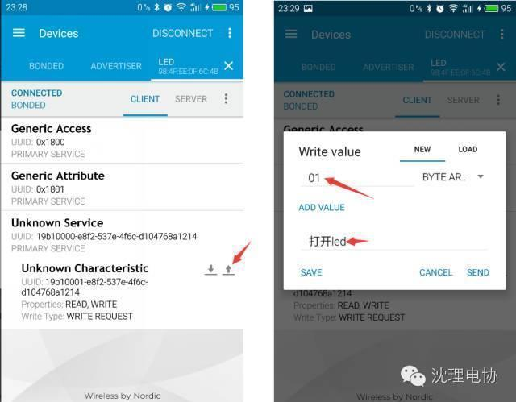
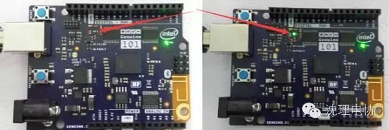

使用小程序
在黑暗系电影中是一个另人战栗标签。不管是黑夜传说中的Lucian还是暮光之城中的Renesmee，一半狼人一半吸血鬼的血统的基因构成令他们拥有更加出众的体质。



· 包含了两个微处理器，分别是低功耗的X86 Intel Quark和32-bit的ARC，它们的时钟都为32MHZ
· 384kB flash内存，80kB SRAM
· 低功耗、集成DSP传感器hub和模式匹配技术
· 低功耗蓝牙(Bluetooth LE)
· 六轴的加速度计和陀螺仪传感器

1.DC电源接口
进行Genduino 101的开发，需要先在开发板管理器安装Arduino 101 Boards,否则在菜单-工具-开发板里找不到Arduino 101，这里需要进行安装，操作如下：

我们使用CurieImu示例的RawImuDataSerial。打开例程，把Genuino 101连接到电脑上，在（工具-端口）选择Genuino 101对应的端口号，点IDE的上传。上传过程要6秒左右，完成后，我们可以打开IDE自带的串口助手，可以采集到加速度计和陀螺仪的原始数据。

按照上面介绍加入示例的方法，我们来运行一下BLE例程，选择菜单栏的文件-示例-CurieBle-LED。该例程可以使用手机端的APP来控制Genuino 101板上的LED亮灭，我们分析一下代码，如下图，APP发送不是0的值时LED打开，如果发送的值是0，则关闭LED灯。
笔者使用安卓手机，所以可以在应用中心搜索 nRF Master Control Panel并下载 ，安装完成后，打开蓝牙就能搜索到名称为LED的设备。成功连接后会如下图所示，点击左图的上箭头后，在右图的Write value里填写01或00便能控制LED亮灭。

蓝牙APP

LED灯亮灭控制
轻松随手玩，就是这么简单
信息部/吴心成